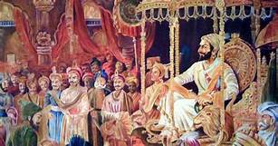

CHHATRAPATI SHIVAJI MAHARAJ was born on 19 February 1630. He was born at Shivneri which is a hill fort in Junnar in Poona, now known as Pune. CHHATRAPATI SHIVAJI MAHARAJ took birth into a family of bureaucrats. His father Shahji Bhonsale was a great Maratha general in the army of Bijapur Sultanate and his mother Jijabai was a great devotee of religion. He was the founder of the great Maratha kingdom of India. He was one of the bravest and marvelous rulers in the 17th century.
Life History of CHHATRAPATI SHIVAJI MAHARAJ
CHHATRAPATI SHIVAJI MAHARAJ was the founder of the Maratha kingdom of India. The security of the kingdom was entirely based on religious tolerance and also on the functional integration of Brahmans, Marathas, and the Prabhus. CHHATRAPATI SHIVAJI MAHARAJ who was the descendent of a line of prominent nobles was very brave and fought many wars to consolidate India. At that time, India was under the Muslim rulers and divided. The Mughals were in north India and the Muslim sultans of Bijapur as well as of Golconda in the south of India. The ancestral estates of CHHATRAPATI SHIVAJI MAHARAJ Maharaj were situated in the Deccan region in the realm of Bijapur sultans. He found the suppression of the Muslim rulers and the persecution of all the Hindus in the region. He was sad due to the devastating condition of the Hindus that by the age of 16 he convinced himself to be the cause of the Hindu’s freedom. It was a conviction that was to sustain him throughout his whole life.
CHHATRAPATI SHIVAJI MAHARAJ
PART – 1
EARLY LIFE
CHHATRAPATI SHIVAJI MAHARAJ was born on april 1627 or 19 february 1630 in the hill-fort of Shivneri, near the city of Junnar in what is now Pune district. CHHATRAPATI SHIVAJI MAHARAJ’s father Shahaji Bhonsle was a Maratha general who served the Deccan Sultanates. His mother was Jijabai. At the time of CHHATRAPATI SHIVAJI MAHARAJ birth, power in Deccan was shared by three Islamic sultanates: Bijapur, Ahmednagar, and Golkonda. CHHATRAPATI SHIVAJI MAHARAJ was devoted to his mother Jijabai, who was deeply religious. His studies of the Hindu epics, the Ramayana and the Mahabharata, also influenced his lifelong defence of Hindu values. hivaji was deeply interested in religious teachings, and regularly sought the company of Hindu and Sufi saints. He moved CHHATRAPATI SHIVAJI MAHARAJ and Jijabai from Shivneri to Pune and left them in the care of his jagir administrator, Dadoji Konddeo. Dadoji has been credited with overseeing the education and training of young CHHATRAPATI SHIVAJI MAHARAJ
THE BEGINNING
Many of CHHATRAPATI SHIVAJI MAHARAJ's comrades, and later a number of his soldiers, came from the Maval region, including Yesaji Kank, Suryaji Kakade, Baji Pasalkar, Baji Prabhu Deshpande and Tanaji Malusare. CHHATRAPATI SHIVAJI MAHARAJ traveled the hills and forests of the Sahyadri range with his Maval friends, gaining skills and familiarity with the land that would prove useful in his military career. He married Saibai from the prominent Nimbalkar family in 1640.Around 1645, the teenage CHHATRAPATI SHIVAJI MAHARAJ first expressed his concept for Hindavi Swarajya (Indian self-rule), in a letter.
YOUNG WARRIOR
 In 1645, the 15-year-old CHHATRAPATI SHIVAJI MAHARAJ bribed or persuaded Inayat Khan, the Bijapuri commander of the Torna Fort,
to hand over possession of the fort to him.
The Maratha Firangoji Narsala, who held the Chakan fort, professed his loyalty to CHHATRAPATI SHIVAJI MAHARAJ, and the fort of
Kondana was acquired by bribing the Bijapuri governor.
On 25 July 1648, Shahaji was imprisoned by Baji Ghorpade under the orders of Bijapuri ruler Mohammed Adilshah,
in a bid to contain CHHATRAPATI SHIVAJI MAHARAJ.
According to Sarkar, Shahaji was released in 1649.During these developments, from 1649–1655 CHHATRAPATI SHIVAJI MAHARAJ paused in
his conquests and quietly consolidated his gains.
In 1645, the 15-year-old CHHATRAPATI SHIVAJI MAHARAJ bribed or persuaded Inayat Khan, the Bijapuri commander of the Torna Fort,
to hand over possession of the fort to him.
The Maratha Firangoji Narsala, who held the Chakan fort, professed his loyalty to CHHATRAPATI SHIVAJI MAHARAJ, and the fort of
Kondana was acquired by bribing the Bijapuri governor.
On 25 July 1648, Shahaji was imprisoned by Baji Ghorpade under the orders of Bijapuri ruler Mohammed Adilshah,
in a bid to contain CHHATRAPATI SHIVAJI MAHARAJ.
According to Sarkar, Shahaji was released in 1649.During these developments, from 1649–1655 CHHATRAPATI SHIVAJI MAHARAJ paused in
his conquests and quietly consolidated his gains.
CONQUESTS
After his release, Shahaji retired from public life, and died around 1664–1665 in a hunting accident. Following his father’s release, CHHATRAPATI SHIVAJI MAHARAJ resumed raiding, and, a fellow Maratha in 1656, under controversial circumstances, killed Chandrarao More and seized from him the valley of Javali. Adilshah was displeased at his losses to CHHATRAPATI SHIVAJI MAHARAJ’s forces, Having ended his conflict with the Mughals and having a greater ability to respond, in 1657 Adilshah sent Afzal Khan, a veteran general, to arrest CHHATRAPATI SHIVAJI MAHARAJ. Pursued by Bijapuri forces, CHHATRAPATI SHIVAJI MAHARAJ retreated to Pratapgad fort, where many of his colleagues pressed him to surrender. After two months, Afzal Khan sent an envoy to CHHATRAPATI SHIVAJI MAHARAJ suggesting the two leaders meet in private outside the fort to parley.
CONQUESTS(KILLING AFZAL KHAN)
The two met in a hut at the foothills of Pratapgad fort on 10 November 1659. The arrangements had dictated that each come armed only with a sword, and attended by one follower. CHHATRAPATI SHIVAJI MAHARAJ, either suspecting Afzal Khan would arrest or attack him wore armour beneath his clothes, concealed a bagh nakh (metal “tiger claw”) on his left arm, and had a dagger in his right hand. • In the fight, Afzal Khan’s dagger was stopped by CHHATRAPATI SHIVAJI MAHARAJ’s armour, and CHHATRAPATI SHIVAJI MAHARAJ’s weapons inflicted mortal wounds on the general; CHHATRAPATI SHIVAJI MAHARAJ then fired a cannon to signal his hidden troops to attack the Bijapuri army. In the ensuing Battle of Pratapgarh fought on 10 November 1659, CHHATRAPATI SHIVAJI MAHARAJ’s forces decisively defeated the Bijapur Sultanate’s forces. More than 3,000 soldiers of the Bijapur army were killed. The captured enemy, both officers and men, were set free and sent back to their homes with money, food and other gifts. Marathas were rewarded accordingly.
CONQUESTS
Having defeated the Bijapuri forces sent against him, CHHATRAPATI SHIVAJI MAHARAJ’s army marched towards the Konkan and Kolhapur, seizing Panhala fort, and defeating Bijapuri forces in 1659. • He also plundered the English factory at Rajapur and capturing four of the factors, imprisoning them until mid-1663. • In 1660, the Maratha aristocrat CHHATRAPATI SHIVAJI MAHARAJ was trapped in the fort of Panhala, under siege and vastly outnumbered by an Adilshahi army led by Siddi Masud. • In the ensuing Battle of Pavan Khind, the smaller Maratha force held back the larger enemy to buy time for CHHATRAPATI SHIVAJI MAHARAJ to escape. Baji Prabhu Deshpande was wounded but continued to fight until he heard the sound of cannon fire from Vishalgad, signalling CHHATRAPATI SHIVAJI MAHARAJ had safely reached the fort, on the evening of 13 July 1660
CHHATRAPATI SHIVAJI MAHARAJ
PART – 2
CONFLICT WITH MUGHALS
 Until 1657, CHHATRAPATI SHIVAJI MAHARAJ maintained peaceful relations with the Mughal
Empire. CHHATRAPATI SHIVAJI MAHARAJ offered his assistance to Aurangzeb, the Mughal
viceroy of the Deccan and son of the Mughal emperor, in conquering
Bijapur in return for formal recognition of his right to the Bijapuri forts
• Dissatisfied with the Mughal response, and receiving a better offer
from Bijapur, he launched a raid into the Mughal Decccan.
• CHHATRAPATI SHIVAJI MAHARAJ’s confrontations with the Mughals began in March 1657,
when two of CHHATRAPATI SHIVAJI MAHARAJ’s officers raided the Mughal territory near
Ahmednagar.This was followed by raids in Junnar
Aurangzeb, now the Mughal emperor, sent his maternal uncle Shaista
Khan, in January 1660 to attack CHHATRAPATI SHIVAJI MAHARAJ in conjunction with Bijapur’s
army led by Siddi Jauhar.
• Shaista Khan, with his better–equipped and –provisioned army of 80,000
seized Pune. He also took the nearby fort of Chakan, besieging it for a
month and a half before breaching the walls. Shaista Khan pressed his
advantage of having a larger, better provisioned and heavily armed
Mughal army and made inroads into some of the Maratha territory,
seizing the city of Pune and establishing his residence at CHHATRAPATI SHIVAJI MAHARAJ’s
palace of Lal Mahal.
• In April 1663, CHHATRAPATI SHIVAJI MAHARAJ launched a surprise attack on Shaista Khan in Pune;
band of some 200 followers infiltrated Pune, using a wedding procession as
cover. Shaista Khan escaped, losing his thumb but one of his sons and
other members of his household were killed. The Khan took refuge with the
Mughal forces outside of Pune.
Until 1657, CHHATRAPATI SHIVAJI MAHARAJ maintained peaceful relations with the Mughal
Empire. CHHATRAPATI SHIVAJI MAHARAJ offered his assistance to Aurangzeb, the Mughal
viceroy of the Deccan and son of the Mughal emperor, in conquering
Bijapur in return for formal recognition of his right to the Bijapuri forts
• Dissatisfied with the Mughal response, and receiving a better offer
from Bijapur, he launched a raid into the Mughal Decccan.
• CHHATRAPATI SHIVAJI MAHARAJ’s confrontations with the Mughals began in March 1657,
when two of CHHATRAPATI SHIVAJI MAHARAJ’s officers raided the Mughal territory near
Ahmednagar.This was followed by raids in Junnar
Aurangzeb, now the Mughal emperor, sent his maternal uncle Shaista
Khan, in January 1660 to attack CHHATRAPATI SHIVAJI MAHARAJ in conjunction with Bijapur’s
army led by Siddi Jauhar.
• Shaista Khan, with his better–equipped and –provisioned army of 80,000
seized Pune. He also took the nearby fort of Chakan, besieging it for a
month and a half before breaching the walls. Shaista Khan pressed his
advantage of having a larger, better provisioned and heavily armed
Mughal army and made inroads into some of the Maratha territory,
seizing the city of Pune and establishing his residence at CHHATRAPATI SHIVAJI MAHARAJ’s
palace of Lal Mahal.
• In April 1663, CHHATRAPATI SHIVAJI MAHARAJ launched a surprise attack on Shaista Khan in Pune;
band of some 200 followers infiltrated Pune, using a wedding procession as
cover. Shaista Khan escaped, losing his thumb but one of his sons and
other members of his household were killed. The Khan took refuge with the
Mughal forces outside of Pune.
TREATY OF PURANDAR
In 1664 CHHATRAPATI SHIVAJI MAHARAJ sacked the port city of Surat, a wealthy Mughal trading centre. he attacks on Shaista Khan and Surat enraged Aurangzeb. In response he sent the Rajput Mirza Raja Jai Singh I with an army numbering around 15,000 to defeat CHHATRAPATI SHIVAJI MAHARAJ. • The Mughal commander succeeded in luring away several of CHHATRAPATI SHIVAJI MAHARAJ’s key commanders, and many of his cavalrymen, into Mughal service. By mid-1665, with the fortress at Purandar besieged and near capture, CHHATRAPATI SHIVAJI MAHARAJ was forced to come to terms with Jai Singh. • In the Treaty of Purandar, signed between CHHATRAPATI SHIVAJI MAHARAJ and Jai Singh on 11 June 1665, CHHATRAPATI SHIVAJI MAHARAJ agreed to give up 23 of his forts, keeping 12 for himself, and pay compensation of 400,000 gold to the Mughals. CHHATRAPATI SHIVAJI MAHARAJ agreed to become a vassal of the Mughal empire, and to send his son Sambhaji, along with 5,000 horsemen, to fight for the Mughals in the Deccan as a mansabdar.
ESCAPED
In 1666, Aurangzeb summoned CHHATRAPATI SHIVAJI MAHARAJ to Agra along with his nine-year-old son Sambhaji. Aurangzeb’s plan was to send CHHATRAPATI SHIVAJI MAHARAJ to Kandahar, now in Afghanistan, to consolidate the Mughal empire’s northwestern frontier. • However, in the court, on 12 May 1666, Aurangzeb made CHHATRAPATI SHIVAJI MAHARAJ stand behind mansabd?rs (military commanders) of his court. CHHATRAPATI SHIVAJI MAHARAJ took offence and stormed out of court, and was promptly placed under house arrest under the watch of Faulad Khan, Kotwal of Agra. • CHHATRAPATI SHIVAJI MAHARAJ’s position under house arrest was perilous,CHHATRAPATI SHIVAJI MAHARAJ managed to escape from Agra, likely by bribing the guards, though the emperor was never able to ascertain how he escaped despite an investigation.Popular legend says that CHHATRAPATI SHIVAJI MAHARAJ smuggled himself and his son out of the house in large baskets, claimed to be sweets to be gifted to religious figures in the city
RECONQUESTS
The peace between CHHATRAPATI SHIVAJI MAHARAJ and the Mughals lasted until 1670. CHHATRAPATI SHIVAJI MAHARAJ sacked Surat for second time in 1670; the British and Dutch factories were able to repel his attack, but he managed to sack the city itself. • Angered by the renewed attacks, the Mughals resumed hostilities with the Marathas, sending a force under Daud Khan to intercept CHHATRAPATI SHIVAJI MAHARAJ on his return home from Surat, but were defeated in the Battle of Vani-Dindori near present-day Nashik. • October 1670, CHHATRAPATI SHIVAJI MAHARAJ sent his forces to harass the English at Bombay; as they had refused to sell him war materiel
CHHATRAPATI
 CHHATRAPATI SHIVAJI MAHARAJ had acquired extensive lands and wealth through his campaigns, but
lacking a formal title he was still technically a Mughal zamindar.Controversy
erupted amongst the Brahmins of CHHATRAPATI SHIVAJI MAHARAJ’s court: they refused to crown
CHHATRAPATI SHIVAJI MAHARAJ as a king because that status was reserved for those of the kshatriya.
• CHHATRAPATI SHIVAJI MAHARAJ was crowned king of the Marathas in a lavish ceremony at
Raigad on 6 June 1674. Gaga Bhatt officiated, holding a gold vessel filled
with the seven sacred waters of the rivers Yamuna, Indus, Ganges, Godavari,
Krishna and Kaveri over CHHATRAPATI SHIVAJI MAHARAJ’s head, and chanted the Vedic coronation
mantras.
• Nearly fifty thousand people gathered at Raigad for the ceremonies. CHHATRAPATI SHIVAJI MAHARAJ
was entitled Shakakarta (“founder of an era”) and Chhatrapati
(“paramount sovereign”). He also took the title of Haindava
Dharmodhhaarak (protector of the Hindu faith).CHHATRAPATI SHIVAJI MAHARAJ’s mother Jijabai
died on 18 June 1674.
CHHATRAPATI SHIVAJI MAHARAJ had acquired extensive lands and wealth through his campaigns, but
lacking a formal title he was still technically a Mughal zamindar.Controversy
erupted amongst the Brahmins of CHHATRAPATI SHIVAJI MAHARAJ’s court: they refused to crown
CHHATRAPATI SHIVAJI MAHARAJ as a king because that status was reserved for those of the kshatriya.
• CHHATRAPATI SHIVAJI MAHARAJ was crowned king of the Marathas in a lavish ceremony at
Raigad on 6 June 1674. Gaga Bhatt officiated, holding a gold vessel filled
with the seven sacred waters of the rivers Yamuna, Indus, Ganges, Godavari,
Krishna and Kaveri over CHHATRAPATI SHIVAJI MAHARAJ’s head, and chanted the Vedic coronation
mantras.
• Nearly fifty thousand people gathered at Raigad for the ceremonies. CHHATRAPATI SHIVAJI MAHARAJ
was entitled Shakakarta (“founder of an era”) and Chhatrapati
(“paramount sovereign”). He also took the title of Haindava
Dharmodhhaarak (protector of the Hindu faith).CHHATRAPATI SHIVAJI MAHARAJ’s mother Jijabai
died on 18 June 1674.
SOUTH INDIA
 In the run-up to his expedition CHHATRAPATI SHIVAJI MAHARAJ appealed to a sense of Deccani patriotism, that Southern India was a homeland that should be protected from outsiders. His appeal was somewhat successful. • In 1677 CHHATRAPATI SHIVAJI MAHARAJ visited Hyderabad for a month and entered into a treaty with the Qutubshah of the Golkonda sultanate, agreeing to reject his alliance with Bijapur and jointly oppose the Mughals. • In 1677 CHHATRAPATI SHIVAJI MAHARAJ invaded Karnataka Proceeding south, CHHATRAPATI SHIVAJI MAHARAJ seized the forts of Vellore and Gingee; the latter would later serve as a capital of the Marathas during the reign of his son Rajaram I. • The initially promising negotiations were unsuccessful, so whilst returning to Raigad CHHATRAPATI SHIVAJI MAHARAJ defeated his half-brother’s army on 26 November 1677 and seized most of his possessions in the Mysore plateau. DEATH The question of CHHATRAPATI SHIVAJI MAHARAJ’s heir-apparent was complicated by the misbehaviour of his eldest son, Sambhaji, who was irresponsible. In late March 1680, CHHATRAPATI SHIVAJI MAHARAJ fell ill with fever and dysentery, dying around 3–5 April 1680 at the age of 52, on the eve of Hanuman Jayanti. Putalabai, the childless eldest of the surviving wives of CHHATRAPATI SHIVAJI MAHARAJ committed sati by jumping into his funeral pyre. • On 21 April 1680, ten-year-old Rajaram was installed on the throne. However, Sambhaji took possession of Raigad Fort after killing the commander, and on 18 June acquired control of Raigad, and formally ascended the throne on 20 July.Rajaram, his wife Janki Bai, and mother Soyrabai were imprisoned, and Soyrabai executed on charges of conspiracy that October